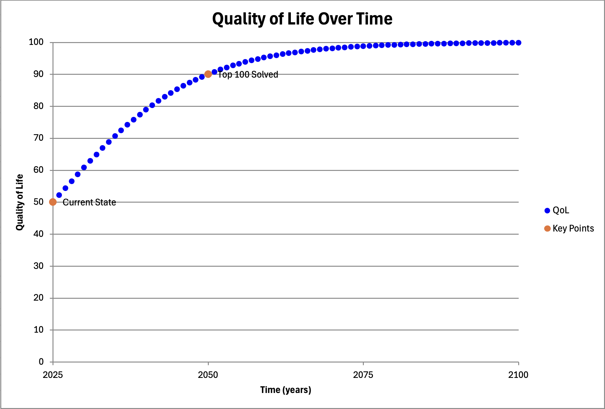
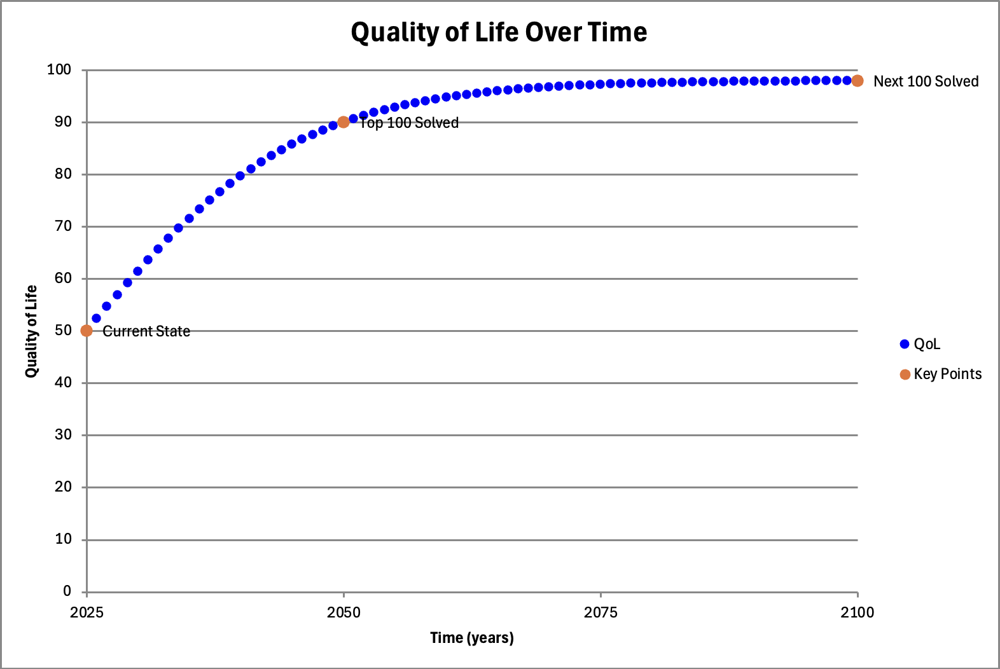

Top 200 Problems Solved Visualized
Building on the resolution of the original top 100 global issues—like climate change, poverty, and inequality—this visualization illustrates the projected improvement in global quality of life (QoL) as we solve these problems and the next 100 emerging challenges. The graphs show a steady rise in QoL over time, with key milestones marked when each set of 100 problems is addressed. This reflects humanity's ongoing evolution, where solving one era's problems unlocks prosperity but introduces new opportunities for growth.
First 100 Problems Solved
This graph depicts the initial surge in quality of life as the top 100 global issues are resolved by around 2050. Starting from the current state in 2025 at approximately 50 QoL points, solving problems such as political instability, health crises, and environmental degradation leads to a significant improvement, reaching about 90 points. This phase focuses on foundational stability, drawing from the iterative rounds of problem-solving outlined in prior analyses.
Next 100 Problems Solved
Once the initial 100 problems are addressed, new challenges arise from advanced technology, space expansion, and ethical dilemmas. This graph extends the timeline to 2100, showing QoL approaching 100 points as issues like AI governance, life extension ethics, and interstellar resource management are tackled. It builds on the prosperity from the first phase, emphasizing that progress creates sophisticated but solvable problems.
Solve anything. Evolve everything.